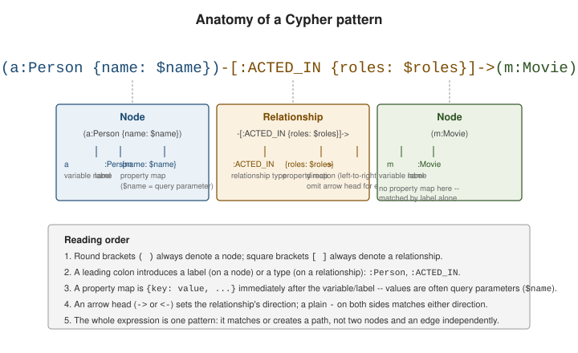

Cypher fundamentals
|
This content was generated with the assistance of AI and should be verified against the official documentation before being relied on in production. |
Cypher is Neo4j’s declarative query language: instead of joins over tables, a query describes a graph pattern to match or create, using nodes in round brackets and relationships in square brackets. This page covers that pattern syntax, the handful of clauses every query is built from, and query parameters.
The examples run against the movie dataset and every result shown was
produced by executing the statement on a Neo4j 2026.01 server. Statements are meant to be run top to bottom:
the write examples add and remove a few scratch nodes as they go, and a later query may see what an earlier one
left behind (a film called John Wick, for example, appears in the aggregate results once it has been merged).
How a Cypher query is evaluated
A query is a pipeline. MATCH produces a stream of rows — one per way the pattern fits the graph — and
every following clause transforms that stream: WHERE drops rows, WITH and RETURN project and aggregate
them, ORDER BY, SKIP and LIMIT sort and slice them, and write clauses such as SET act on each row as it
passes. Thinking in rows explains most surprises: a pattern with four matches yields four rows, and a
following count(*) is therefore four, not one.
pattern becomes rows"] --> W["WHERE
filter rows"] W --> A["WITH or RETURN
project and aggregate"] A --> O["ORDER BY
SKIP and LIMIT"] O --> R["Result rows
to the client"] G[("Graph")] -- "reads" --> M A -- "write clauses
CREATE MERGE SET DELETE" --> G
The pattern: ()-[]-()
A pattern is an ASCII-art sketch of a path through the graph. () is a node, [] is a relationship, and a
dash on either side of the relationship joins them; an arrow head (-> or <-) fixes the direction, while
a plain dash on both sides matches a relationship in either direction.

// a node with a variable, a label, and a property map
(a:Person {name: "Keanu Reeves"})
// a directed relationship with a type and a property map
(a:Person)-[:ACTED_IN {roles: ["Neo"]}]->(m:Movie)
// an undirected pattern -- matches the relationship in either direction
(a:Person)-[:KNOWS]-(b:Person)Every element in a pattern is optional except the brackets themselves: () alone matches any node, [r]
alone binds a relationship variable without constraining its type, and a node or relationship can carry a
label/type with no property map, or a property map with no variable name.
Reusing a variable name inside one pattern or across MATCH clauses means the same element. Within a single
MATCH, a relationship is never traversed twice (relationship uniqueness), which is what keeps variable-length
patterns from looping forever. It also means that in (a)-[:ACTED_IN]->(m)<-[:ACTED_IN]-(b), a and b cannot be
reached through the same credit, so a person is not their own co-actor; the two could still be the same node if that
person has two separate ACTED_IN relationships to the film. When matching across two MATCH clauses nothing
prevents a and b from being the same node, and WHERE a <> b is needed.
|
This page has to write Cypher property maps — |
Core clauses
The read/write clauses below cover most day-to-day Cypher. CREATE and MERGE write patterns; MATCH and
WHERE read and filter them; RETURN shapes the output; SET/REMOVE mutate properties and labels;
DELETE/DETACH DELETE remove data. Choosing the right write clause is mostly a question of what should
happen if the data is already there:
always adds, duplicates allowed"] E --> C2["MERGE
match or create, idempotent"] U --> C3["SET to write or replace
REMOVE to drop labels and properties"] D --> C4["DELETE for a node with no relationships
DETACH DELETE to remove the relationships too"]
CREATE, MATCH and WHERE
// CREATE: always adds new nodes/relationships, even if an identical one exists
CREATE (m:Movie {title: "The Matrix Resurrections", released: 2021})
WITH m
MATCH (a:Person {name: "Keanu Reeves"})
CREATE (a)-[:ACTED_IN {roles: ["Neo"]}]->(m)
RETURN a.name AS actor, m.title AS movie;+---------------------------------------------+
| actor | movie |
+---------------------------------------------+
| "Keanu Reeves" | "The Matrix Resurrections" |
+---------------------------------------------+
Created 1 node, created 1 relationship, set 3 properties, added 1 labelBecause CREATE never looks first, running a creating statement twice creates two of everything. Two scratch
films with the same title make that visible:
CREATE (:Movie {title: "Scratch"});
CREATE (:Movie {title: "Scratch"});
MATCH (m:Movie {title: "Scratch"}) RETURN count(m) AS copies;+--------+
| copies |
+--------+
| 2 |
+--------+MATCH plus WHERE finds existing patterns and filters them. Here, every credit on or after 1998 for people
whose name begins with Hugo:
// MATCH + WHERE: find existing patterns and filter them
MATCH (a:Person)-[r:ACTED_IN]->(m:Movie)
WHERE m.released >= 1998 AND a.name STARTS WITH "Hugo"
RETURN a.name, r.roles, m.title
ORDER BY m.released;+----------------------------------------------------------+
| a.name | r.roles | m.title |
+----------------------------------------------------------+
| "Hugo Weaving" | ["Agent Smith"] | "The Matrix" |
| "Hugo Weaving" | ["Agent Smith"] | "The Matrix Reloaded" |
| "Hugo Weaving" | ["Bill Smoke"] | "Cloud Atlas" |
+----------------------------------------------------------+WHERE accepts the usual comparison operators, boolean logic (AND, OR, NOT, XOR), IN against a list,
the string predicates STARTS WITH, ENDS WITH and CONTAINS, regular expressions with =~, IS NULL /
IS NOT NULL, and existence subqueries that test whether a pattern is present without binding it:
MATCH (p:Person) WHERE p.born IN [1941, 1956] RETURN p.name ORDER BY p.name;
MATCH (p:Person) WHERE p.name =~ "(?i).*ana.*" RETURN p.name;
MATCH (p:Person) WHERE EXISTS { (p)-[:DIRECTED]->() } RETURN p.name ORDER BY p.name;
MATCH (p:Person)
WHERE NOT EXISTS { (p)-[:DIRECTED]->() } AND p.born < 1962
RETURN p.name ORDER BY p.name;The first query returns Nora Ephron and Tom Hanks, and the regular expression matches Lana Wachowski. The
expression is Java syntax and must match the whole string, which is why it is wrapped in .*; (?i) makes it
case-insensitive. The last two queries answer "who directs" (Lana Wachowski and Nora Ephron) and "who does not,
among people born before 1962" (Hugo Weaving, Laurence Fishburne, Meg Ryan and Tom Hanks) without
producing a row per directed film.
MERGE
MERGE is Cypher’s idempotent write: it matches the given pattern and only creates it when no match exists,
which makes it the standard way to load data without producing duplicates on a re-run. ON CREATE SET runs only
when the pattern was created and ON MATCH SET only when it already existed, so the same statement can be run
repeatedly:
// MERGE: match-or-create, keyed on the properties given
MERGE (m:Movie {title: "John Wick"})
ON CREATE SET m.released = 2014, m.createdAt = datetime()
ON MATCH SET m.lastSeenAt = datetime()
RETURN m.title, m.released, m.lastSeenAt IS NOT NULL AS seenBefore;The first run creates the film, as the update counters show; run again, the same statement only matches it,
returns seenBefore as TRUE and reports a single property set (lastSeenAt):
+---------------------------------------+
| m.title | m.released | seenBefore |
+---------------------------------------+
| "John Wick" | 2014 | FALSE |
+---------------------------------------+
Created 1 node, set 3 properties, added 1 labelRelationships are merged the same way. Bind the two endpoints with MATCH first, then merge the relationship
between them, so that only the relationship is match-or-created:
MATCH (a:Person {name: "Keanu Reeves"}), (m:Movie {title: "John Wick"})
MERGE (a)-[r:ACTED_IN]->(m)
ON CREATE SET r.roles = ["John Wick"]
RETURN a.name, r.roles, m.title;+----------------------------------------------+
| a.name | r.roles | m.title |
+----------------------------------------------+
| "Keanu Reeves" | ["John Wick"] | "John Wick" |
+----------------------------------------------+
Created 1 relationship, set 1 propertyRunning it again returns the same row and creates nothing.
|
The film did not exist, so A uniqueness constraint (see Indexes & constraints) makes the duplicate version fail with an error instead of silently creating the second node. |
SET, REMOVE and DELETE
SET writes properties or adds labels; REMOVE is its inverse for labels and properties. SET n += {map}
adds or overwrites the listed keys and leaves the rest, while SET n = {map} replaces the whole property
set, dropping every key not in the map.
// SET / REMOVE: mutate properties and labels
MERGE (m:Movie {title: "Scratch"}) ON CREATE SET m.released = 2000
SET m.tagline = "Welcome to the Real World", m:Classic
RETURN labels(m) AS labels, m.tagline AS tagline;
MATCH (m:Movie {title: "Scratch"})
REMOVE m.tagline, m:Classic
RETURN labels(m) AS labels, m.tagline AS tagline;
// += merges the map in; = replaces every property
MATCH (m:Movie {title: "Scratch"})
SET m += {tagline: "Free your mind", rating: 8.7}
RETURN properties(m) AS props;
MATCH (m:Movie {title: "Scratch"})
SET m = {title: "Scratch", released: 2001}
RETURN properties(m) AS props;+----------------------------------------------------+
| labels | tagline |
+----------------------------------------------------+
| ["Movie", "Classic"] | "Welcome to the Real World" |
+----------------------------------------------------+
+------------------------------------+
| props |
+------------------------------------+
| {title: "Scratch", released: 2001} |
+------------------------------------+DELETE removes nodes or relationships that were matched, but a node with any relationship still attached
refuses a plain DELETE — DETACH DELETE removes the node’s relationships first, in the same statement.
CREATE (:Person {name: "Old Extra"})-[:ACTED_IN {roles: ["Crowd"]}]->(:Movie {title: "Scratch"});
// DELETE fails here because the node still has a relationship
MATCH (a:Person {name: "Old Extra"})
DELETE a;
// DETACH DELETE removes the node's relationships first, then the node
MATCH (a:Person {name: "Old Extra"})
DETACH DELETE a;G1001: dependent object error - edges still exist
Deleted 1 node, deleted 1 relationshipTo clear a whole database during experiments, MATCH (n) DETACH DELETE n works, but on a large graph it is a
single huge transaction; see Importing data for deleting in batches.
Expressions, aggregation and null
RETURN and WITH are where rows are shaped. Any expression is allowed, aliases are introduced with AS, and
an aggregating function (count, sum, avg, min, max, collect) turns the rows into groups: every
non-aggregated expression in the same RETURN becomes an implicit grouping key. ORDER BY, SKIP and LIMIT
then sort and page the result.
MATCH (p:Person)-[:ACTED_IN]->(m:Movie)
RETURN p.name AS actor, count(m) AS films
ORDER BY films DESC, actor
LIMIT 3;
MATCH (p:Person)-[:ACTED_IN]->(m:Movie)
RETURN p.name AS actor, count(m) AS films
ORDER BY films DESC, actor
SKIP 3 LIMIT 3;+------------------------+
| actor | films |
+------------------------+
| "Keanu Reeves" | 5 |
| "Hugo Weaving" | 3 |
| "Tom Hanks" | 3 |
+------------------------+count(*) counts rows, count(x) counts the non-null values of x, and count(DISTINCT x) counts the unique
ones. The difference matters as soon as a pattern fans out, as in this count of credits (rows), distinct people and distinct
films:
MATCH (m:Movie)
RETURN count(*) AS films, min(m.released) AS first, max(m.released) AS last, round(avg(m.released)) AS mean;
MATCH (p:Person)-[:ACTED_IN]->(m:Movie)
RETURN count(*) AS credits, count(DISTINCT p) AS people, count(DISTINCT m) AS films;On this data the first query returns 8 films released between 1993 and 2021 (mean 2004.0), and the second
returns 17 credits shared by 6 people across 8 films: six actors account for seventeen rows.
CASE is the conditional expression, with the searched form shown here (CASE WHEN condition THEN value ... END)
and a simple form that compares one expression to several values:
MATCH (m:Movie)
RETURN m.title AS title,
CASE WHEN m.released < 1995 THEN "classic"
WHEN m.released < 2005 THEN "modern"
ELSE "recent" END AS era
ORDER BY m.released;Sleepless in Seattle and Speed come out as "classic", You've Got Mail, The Matrix and The Matrix Reloaded as
"modern", and the rest as "recent".
Null, three-valued logic and strings
A missing property evaluates to null, and null propagates: comparing anything with null yields null, not
false, and WHERE keeps a row only when the predicate is exactly true. Equality with null is therefore never
the right test; use IS NULL and coalesce() instead. Boolean operators follow three-valued logic, so
null AND false is false and null OR true is true, while null AND true stays null.
RETURN null = null AS eq, null IS NULL AS isNull, coalesce(null, "fallback") AS c,
null AND false AS andFalse, null OR true AS orTrue, 1 < null AS cmp;+-------------------------------------------------------+
| eq | isNull | c | andFalse | orTrue | cmp |
+-------------------------------------------------------+
| NULL | TRUE | "fallback" | FALSE | TRUE | NULL |
+-------------------------------------------------------+The string functions most queries need are toUpper/toLower, left/right/substring, size, split,
trim, replace and toString; list elements are indexed from zero, and a negative index counts from the end:
MATCH (p:Person)
RETURN p.name AS name, toUpper(left(p.name, 3)) AS code, size(p.name) AS len, split(p.name, " ")[-1] AS surname
ORDER BY surname LIMIT 3;The three rows are Nora Ephron ("NOR", 11, "Ephron"), Laurence Fishburne ("LAU", 18, "Fishburne") and
Tom Hanks ("TOM", 9, "Hanks").
Query parameters
Hardcoding literals into Cypher text defeats query-plan caching and invites injection when values come from
user input. Parameters — written $name in the query and supplied separately by the driver or the Cypher
shell — keep the query text stable across calls with different values, exactly the role bind variables play
in parameterized SQL.
// the query text never changes between calls; only the parameter values do
MATCH (a:Person {name: $name})-[:ACTED_IN]->(m:Movie)
WHERE m.released >= $sinceYear
RETURN m.title
ORDER BY m.released// cypher-shell: set parameters before running a query that references them
:param name => "Keanu Reeves"
:param sinceYear => 1995Run in cypher-shell with name set to Keanu Reeves and sinceYear to 1995, the query returns every film
of his from 1995 on, including the two that the write examples above merged in:
+----------------------------+
| m.title |
+----------------------------+
| "The Matrix" |
| "The Matrix Reloaded" |
| "John Wick" |
| "The Matrix Resurrections" |
+----------------------------+Setting new values changes the result without touching the query text
(:param \{name: "Tom Hanks", sinceYear: 1990\} sets several at once, and :params lists what is set):
A parameter that the query references but the caller did not supply is rejected before anything runs:
42N81: syntax error or access rule violation - missing request parameter. Expected $`missing`, but got nothing.A property map such as \{name: $name\} combines both ideas: the map supplies the property to match or set,
and $name supplies its value as a parameter rather than a literal baked into the query text. A parameter can
carry a whole map or list too (SET n += $props, UNWIND $rows AS row), which is how drivers do bulk writes;
see Transactions & drivers.
Reading a query plan
Prefix any read query with EXPLAIN to see the query plan the query planner chose without running it, or with PROFILE to
run it and see how many rows flowed through each operator and how many db hits (store accesses) each one cost.
Operators are read from the bottom up: the bottom operator produces rows, and each operator above consumes them.
PROFILE MATCH (a:Person {name: "Keanu Reeves"})-[:ACTED_IN]->(m:Movie) RETURN m.title;+------------------+----+------------------------+----------------+------+---------+----------------+------------------------+
| Operator | Id | Details | Estimated Rows | Rows | DB Hits | Memory (Bytes) | Page Cache Hits/Misses |
+------------------+----+------------------------+----------------+------+---------+----------------+------------------------+
| +ProduceResults | 0 | `m.title` | 1 | 3 | 0 | 0 | 0/0 |
| | +----+------------------------+----------------+------+---------+----------------+------------------------+
| +Projection | 1 | m.title AS `m.title` | 1 | 3 | 3 | | 0/0 |
| | +----+------------------------+----------------+------+---------+----------------+------------------------+
| +Filter | 2 | m:Movie | 1 | 3 | 3 | | 0/0 |
| | +----+------------------------+----------------+------+---------+----------------+------------------------+
| +Expand(All) | 3 | (a)-[:ACTED_IN]->(m) | 1 | 3 | 4 | | 0/0 |
| | +----+------------------------+----------------+------+---------+----------------+------------------------+
| +Filter | 4 | a.name = $autostring_0 | 1 | 1 | 8 | | 0/0 |
| | +----+------------------------+----------------+------+---------+----------------+------------------------+
| +NodeByLabelScan | 5 | a:Person | 10 | 8 | 9 | | 0/0 |
+------------------+----+------------------------+----------------+------+---------+----------------+------------------------+
Total database accesses: 27, total allocated memory: 64Reading from the bottom: NodeByLabelScan visits all eight :Person nodes, Filter keeps the one named
Keanu Reeves, Expand(All) follows his ACTED_IN relationships (one hop per film) and the remaining operators
check the label and project the title. The 27 db hits are dominated by the label scan, which grows with the
number of people; the fix, an index on Person.name, is shown in
Indexes & constraints.
Common errors
Most first-week errors fall into a handful of classes, and the most dangerous are the ones that raise no error at all.
| Mistake | What Neo4j does | How to spot it |
|---|---|---|
Misspelled label or relationship type, e.g. |
Returns zero rows, with no error. |
Run |
Using a variable that was never bound |
|
The message carries the line and column of the offending name. |
Matching against the arrow |
Zero rows. |
Drop the arrow to test, or check the stored direction in Browser. |
|
Concatenates: |
Convert explicitly with |
|
Returns |
Filter with |
Integer division by zero |
|
Guard with |
Missing parameter |
|
Supply every |
|
|
Use |
Coming from SQL
Readers arriving from a relational background can map most of the clauses above onto familiar operations:
MATCH plus WHERE plays the role of a SELECT with a WHERE and implicit joins along the pattern’s
relationships, CREATE/MERGE play INSERT/UPSERT, and SET/DELETE play UPDATE/DELETE. The
SQL Reference is the relational baseline this comparison is drawn against — the biggest conceptual shift is that a Cypher pattern makes relationships explicit, first-class parts of the
query text instead of implicit join conditions resolved through foreign keys.
Continue with the official reference for how Cypher fits into Neo4j overall
(Cypher & Neo4j), the shape of a
full query (Queries), and the complete clause list
(Clauses). The next page,
Advanced querying, chains these clauses together with WITH,
subqueries and path patterns.